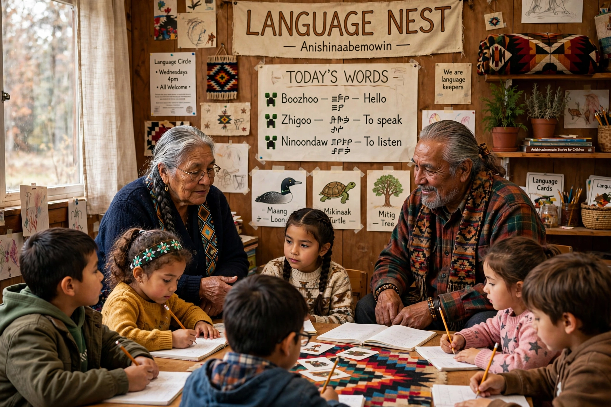

Language revitalisation, also called language revival or reversing language shift, is an effort by governments, communities and linguists to halt or reverse the decline of an endangered language and restore its use, sometimes after it has ceased to be spoken, as with the last speaker phenomenon.

| Field | Sociolinguistics |
|---|---|
| Noted success | Hebrew revival |
| Methods | Immersion schools, master-apprentice, documentation |
Programmes include immersion 'language nests' for preschoolers — pioneered by Māori kōhanga reo and Hawaiian Pūnana Leo schools — master-apprentice pairing of elders with learners, documentation and dictionary-making, and media and technology in the language. Joshua Fishman's Graded Intergenerational Disruption Scale guides many efforts.
Hebrew is the classic full revival, becoming a vernacular and national language of Israel. Welsh, Basque, Catalan and Irish have seen partial reversals supported by language policy, broadcasting and education. Many Indigenous languages in Australia, North America and Siberia face severe endangerment, with revitalisation proceeding despite very few remaining speakers.